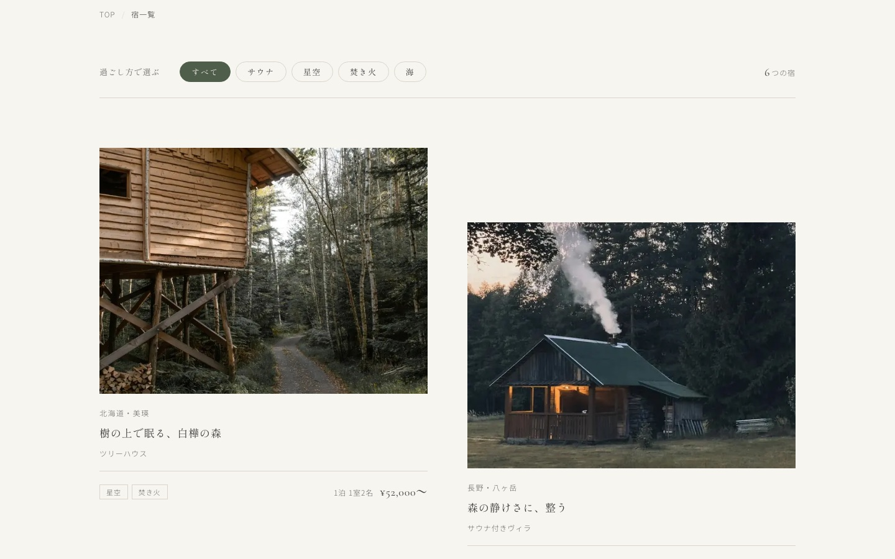
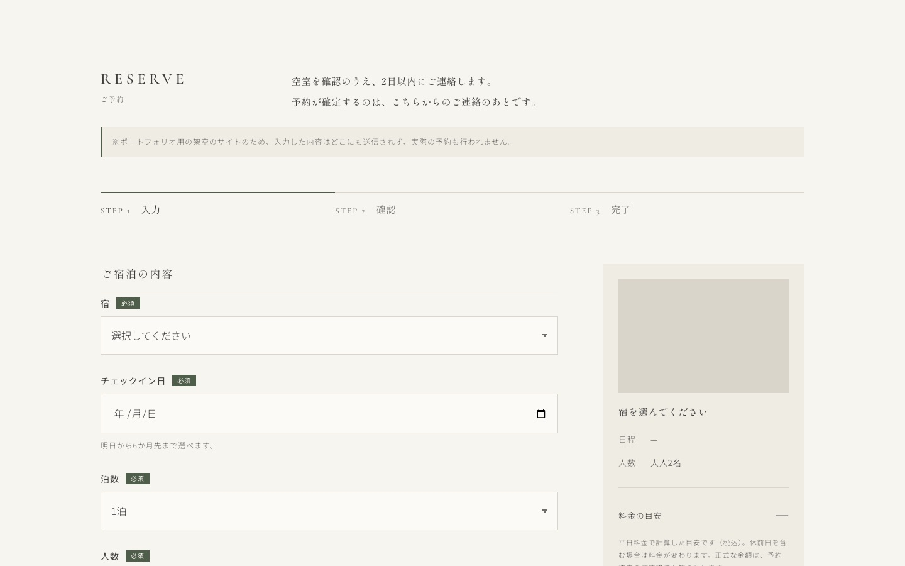

宿ブランド「NAGI（凪）」公式サイト



- 制作区分
- 自主制作（架空の宿ブランド）
- 制作概要
- 全国に6つの宿をもつ宿ブランド「NAGI（凪）」の公式サイト。トップ、コンセプト、宿の一覧と詳細（6施設）、お知らせ、ご利用案内、予約フォームなど全18ページ。
- 制作目的
- 自然の中で何もしない時間を過ごせる宿の魅力を伝え、予約につなげること。
- ターゲット
- 日常から離れて自分を整えたい20〜30代の男女（ひとり旅・カップル・友人同士）。
- 担当範囲
- 要件定義、サイト設計、デザイン、コーディング、公開
- デザインの意図
「心が凪ぐ場所へ」というコンセプトから、余白を多くとり、大きな写真と明朝体、落ち着いたアースカラーで静けさを表現しました。
トップは霧の夜明けの湖から始まり、6つの宿の写真へゆっくり切り替わります。
- コーディング
PC・スマホ対応（スマホファースト）。予約フォームは「入力 → 確認 → 完了」の画面の切り替えと入力チェックをJavaScriptで再現しました。
写真をWebPにして画面の幅に合った大きさを読み込むなど、表示の速さにも気を配りました。
- WordPress
- 練習として、このサイトをWordPressのオリジナルテーマにする作業も行いました（ローカル環境）。
- 使用ツール
- HTML / CSS / JavaScript / WordPress